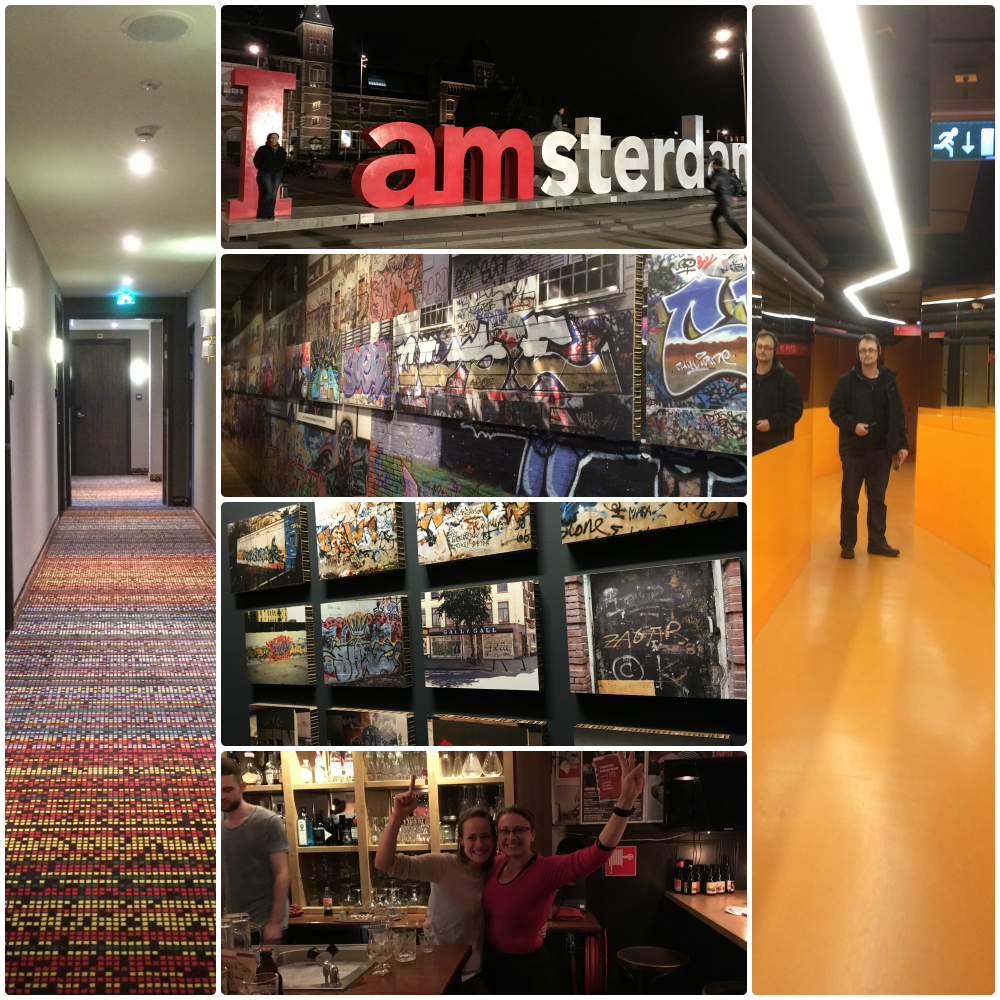
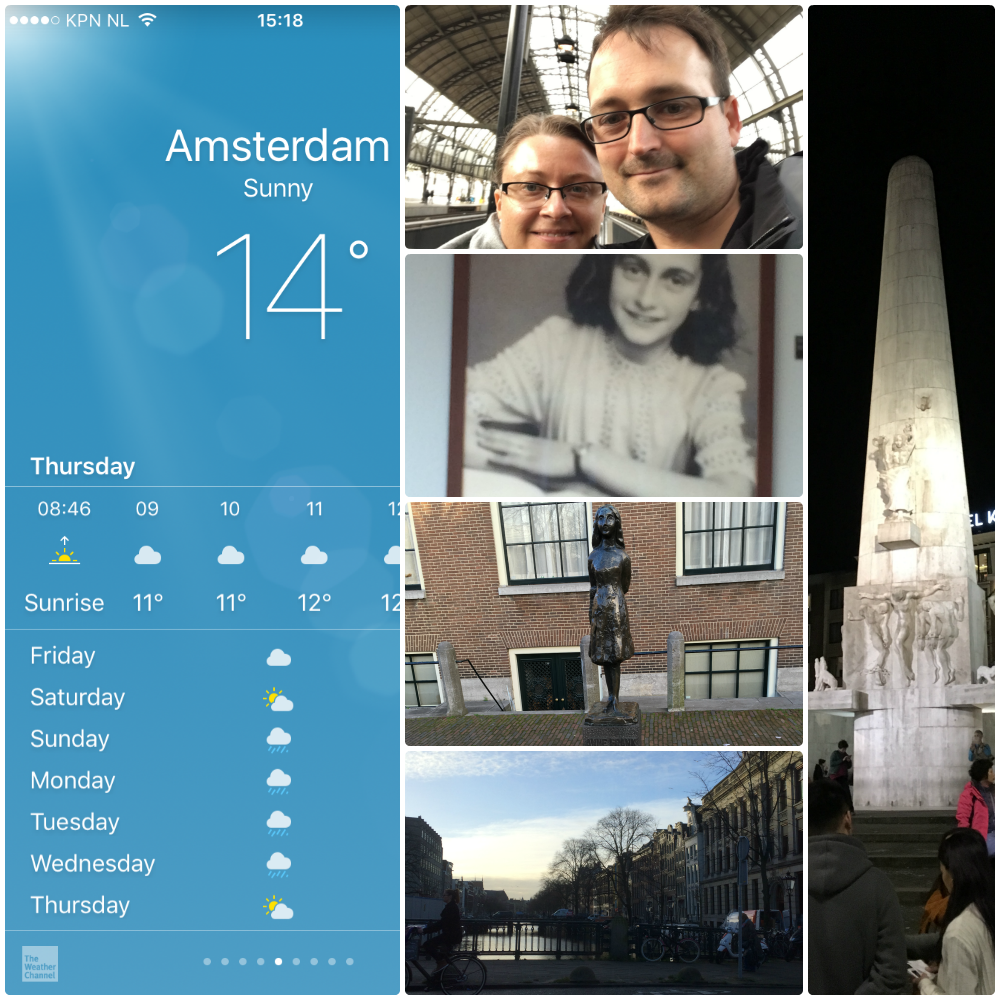
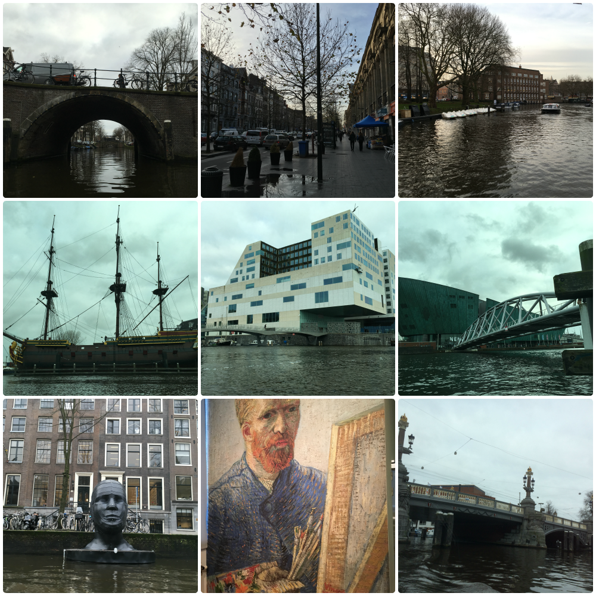
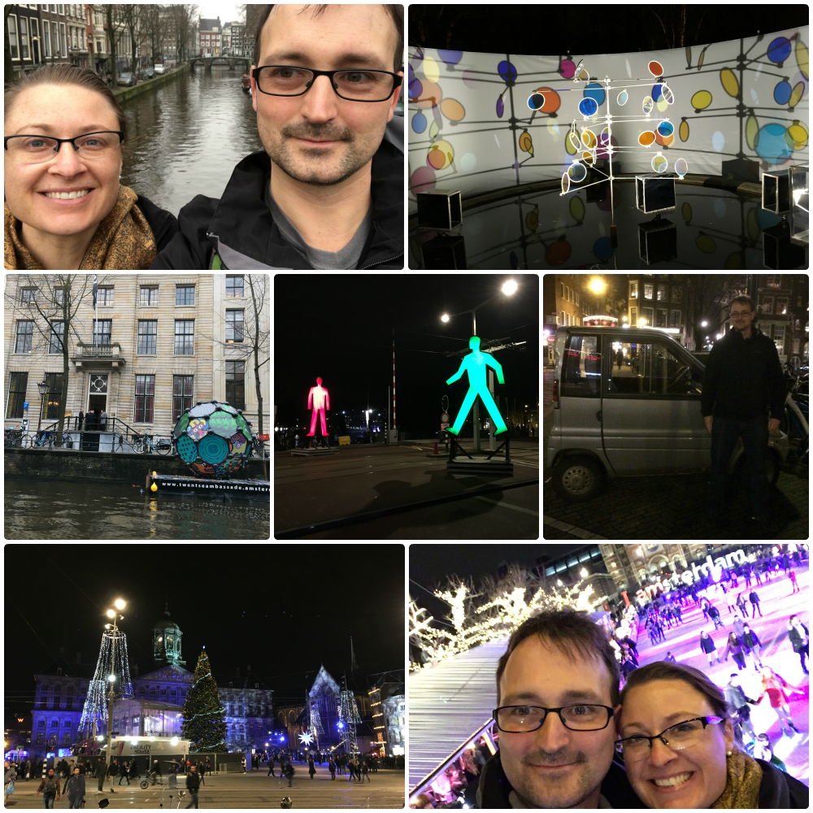
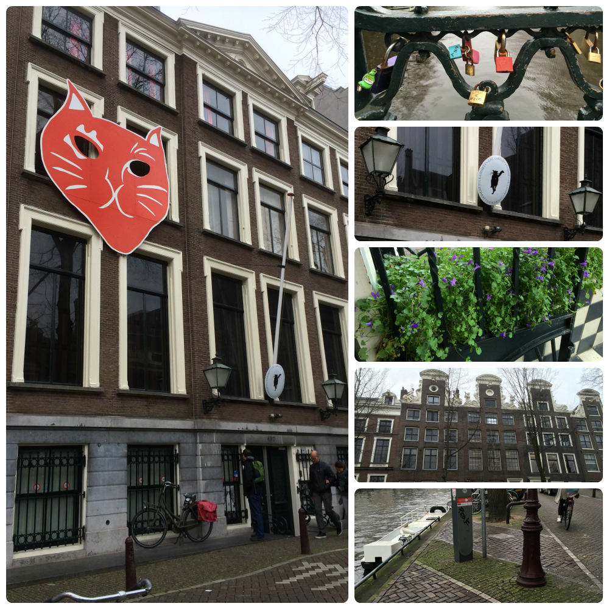

Day 10
Thursday - 17 Dec 2015

We arrive in Amsterdam on time at 1400 and after an obligatory selfie on the platform we take the easy option of catching a cab to the hotel (we hadn't done any research into public transport which turned out to be tactical error).
After a moment where Lang tries to get into the drivers seat we sort ourselves out and are quickly cruising through the streets of Amsterdam. Some 20 min later and the driver has delivered us to our hotel safely. After small check in issue is resolved we drop our bags in our room (make sure you check out the picture of the carpet) we catch on quick to the public transport and pick up a bus, train, tram ticket and make our way to the Amsterdam Museum.
As it turns out when we get our hands on a map the cabbie had pulled a swifty by taking us the long way to the hotel. Good work cabbie, good work. Serve us right for not doing the proper research to begin with.
Arriving at the museum at 1600 we were advised that there was only an hour til closing, unlucky. We were able to cover two very different parts of the museum. The first part is a permanent display covering the history of how Amsterdam came to be in the current day. The other major part is a temporary exhibition covering the graffiti era of Amsterdam and the contributing factors. There is another temporary exhibition that we do not have time to cover at all and we had to rush the history of Amsterdam section before the museum closes. *insert sad face* #ivechanged #museumswhoknew
After a hit of friets we check out the Dam. It is a central plaza area full of restaurants and shops with a large felic monument in the centre.
Some souvenir shopping (Lang LOVES the souvenir shops) and we head out on the tram to meet Loes, who I worked with at University of Qld CCR. Big chats and a few vodkas later Loes and her partner David have given us some tips of things to do in Amsterdam as well as Berlin. They soon head off to get some sleep before work in the morning.
With another big day completed we flop into bed.
***Weather is in the eye of the beholder***
Day 11
Friday - 18 Dec 2015
At the Best Western the room price included breakfast. WIN! The buffet included some of the best bacon I have ever had in a hotel. Croissants and bacon. Om nom nom!!
We make our way back out to the tram stop, conveniently located out the front of the hotel, and head to Anne Frank House. It was a pleasant 11-14 degree day outside with clear, beautiful blue skies. A 20 min tram ride later into the city and we arrive in the vicinity of the Anne Frank House. The House isn't quite as distinctively marked as I assume it will be and consequently we spent about 20 min walking around in circles looking for it. We finally gave in and consulted Google who advised us we had walked within 15 meters of the entrance several times. Thanks Google. #ilovegps
The visit to the Anne Frank House is very emotional. Seeing the war through the eyes of a 14 year old and all that she had to endure makes that period of history all the more humanised. The place is very interesting and worth the time if you ever have the opportunity.
Next stop is to hunt and gather some lunch as we have about 30 minutes until the next canal cruise departs. There is a small cafe selling homemade tomato and herb soup with bread. SOLD!!!
For 60 minutes the cruise winds its way around the canals of the inner city. There was a recorded history and anecdotes that we could plug into at no extra charge complemented the cruise. Rather than just looking at old buildings and structures it gave background, meaning and also ideas for places to visit during the rest f our stay.
We conveniently finish the cruise a short walk from the Van Gogh Museum. I was very pleased to eyeball Iris, Sunflower and even Scream by his friend. I had not realised how much of his life he struggled with mental illness and how short his life actually was.
It is dark by the time we exit the museum which is perfect for our next mission: the Amsterdam Light Festival. Described as a winter festival of light, art and water in the historical centre of Amsterdam.
From the Van Gogh Museum we take a tram up to the centre of town. Once in the Dam we take the opportunity to find something to eat and then cut across through the red-light district. The number of different types of people in the district was unexpected.
As we get closer to the area where the Light Festival is supposed to be the more apparent it becomes that we have made a tactical error when we marked the location on the map. We finally stumble upon the light festival several blocks from where we thought it was and are greatly entertained by the artistic ability displayed. Some designs are incredibly imaginative and convey complex thoughts and opinions.
We wander the area for hours. We stumble upon a large green house in the middle of a park area that has been transformed into a sanctuary from the cold with live music, hot chocolate and mulled wine. It was a marvelous place to sit and enjoy the atmosphere.
After a short reprieve we continued onwards. Generally meandering towards our hotel. Eventually we came across the Amsterdam Casino and decide to look around for some dinner in what appeared to be a small cafe. Turns out there is another floor above us and the premises is actually a fully functioning restaurant. They have only been open for two weeks so are not very well known yet. I have no complaints about either the service or the food.
With full tummies we decide to have a punt in the Casino. Well ... until they ask for a 5 Euro cover charge. Um ... no. As if I wasn't going to blow enough money in there in the first place you want me to pay for the privilege of throwing my money down your drain. Yeah ... nah. Next!
We hope a tram and start heading out of town. We need to change trams at the stop near the Van Gogh Museum and find the park next door lit up and full of people. A skating rink has been set up with a bridge over the middle. I declined the opportunity to go for a skate with my broken toe in mind. The area was very pretty though. Fairy lights and other decorations giving a real festive feel to the area. Obligatory photo in front of the I AmSterdam and selfie on the bridge over the ice rink.
After cruising around the park for a while enjoying the atmosphere we catch our connecting tram to the hotel. Another big day done.
***Map reading is NOT a wasted skill***
Day 12
Saturday - 19 Dec 2015
My bladder does the questionable kindness of waking me up at 0715. At least I have time to see if the blog updated overnight. YUSSS!! *insert objective achieved sound here*
A quick breakfast and we are off on the tram to Central Station to drop off our bags for the morning while we explore some other locations around the city.
On the canal tour the Cat Museum was pointed out. With a sigh of acquiescence Lang lets me drag him there. Unfortunately it doesn't open until midday. *sad face*
I check the map for other things in the nearby area. Photography Museum is marked a couple of streets away. My expectation is that it will hold a history on the development of photography perhaps specific to Amsterdam. I like photos and photography. That will be interesting. So off we go, paying our 8 Euro each on arrival annnnnnd yeah ... Europe ... the word "Museum" does not mean what you think it means!!
It isn't a museum it is an exhibition of two photographers' work over several decades. One focusing on the slums of America and the other on the urbanisation of the world. While the exhibition and especially the building housing the exhibition were interesting I still felt a little cheated. This isn't the first creative use of the word "Museum" we have come across.
Lunch time arrives and what better way to fuel traveller than with waffles and chocolate!! Next to pick up our bags and find the platform to Berlin which turns out to be more complicated that we would have thought. Small panic attack and some platform maneuverer later we arrive with plenty of time for the train.
We are privileged to have a whole 6 seater cabin with powerpoints and fold out desk to ourselves. WINNING. 10 minutes out of Amsterdam and the compact living has already changed into small cottages with fields. There is a lot of water laying around and I wonder if this is the reason for the lower density living. Bizarrely there is an enormous fancy bridge sticking up out of the fields in the distance.
The next 5.5 hours passes quickly with lessons in layouts and their execution. I am very happy with the end result.
***Case sensitivity can suck balls***